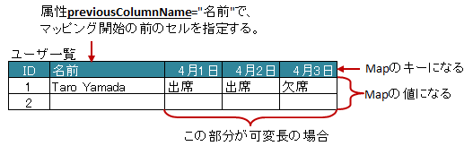
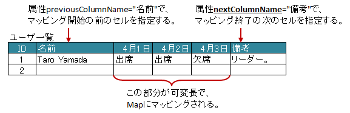

-
@Target(value={METHOD,FIELD}) @Retention(value=RUNTIME) @Documented public @interface XlsMapColumns
アノテーションXlsHorizontalRecordsやXlsVerticalRecordsで指定されたレコード用のクラスにおいて、 カラム数が可変の場合にそれらのカラムをMapとして設定します。BeanにはMapを引数に取るフィールドまたはメソッドを用意し、このアノテーションを記述します。
基本的な使い方
属性
previousColumnName()で指定された次のカラム以降、カラム名をキーとしたMapが生成され、Beanにセットされます。マップのキーは必ず
String型に設定してください。public class SampleRecord { @XlsColumn(columnName="ID") private int id; @XlsColumn(columnName="名前") private String name; @XlsMapColumns(previousColumnName="名前") private Map<String, String> attendedMap; }基本的な使い方
終了条件のセルを指定する場合
属性
nextColumnName()で指定した前のカラムまでが処理対象となり、マッピングの終了条件を指定することができます。public class SampleRecord { @XlsColumn(columnName="ID") private int id; @XlsColumn(columnName="名前") private String name; @XlsMapColumns(previousColumnName="名前", nextColumnName="備考") private Map<String, String> attendedMap; @XlsColumn(columnName="備考") private String comment; }マッピングの終了条件の指定
型変換する場合
アノテーション
XlsConverterなどで型変換を適用するときは、Mapの値が変換対象となります。
マップのキーは必ずString型に設定してくださいpublic class SampleRecord { @XlsColumn(columnName="ID") private int id; @XlsColumn(columnName="名前") private String name; // 型変換用のアノテーションを指定した場合、Mapの値に適用されます。 @XlsMapColumns(previousColumnName="名前") @XlsBooleanConverter(loadForTrue={"出席"}, loadForFalse={"欠席"}, saveAsTrue="出席", saveAsFalse"欠席" failToFalse=true) private Map<String, Boolean> attendedMap; }位置情報／見出し情報を取得する際の注意事項
マッピング対象のセルのアドレスを取得する際に、フィールドMap<String, Point> positionsを定義しておけば、 自動的にアドレスがマッピングされます。
通常は、キーにはプロパティ名が記述（フィールドの場合はフィールド名）が入ります。
アノテーションXlsMapColumnsでマッピングしたセルのキーは、<プロパティ名>[<セルの見出し>]の形式になります。同様に、マッピング対象の見出しを取得する、フィールドMap<String, String> labelsへのアクセスも、 キーは<プロパティ名>[<セルの見出し>]の形式になります。
public class SampleRecord { // 位置情報 private Map<String, Point> positions; // 見出し情報 private Map<String, String> labels; @XlsColumn(columnName="ID") private int id; @XlsColumn(columnName="名前") private String name; @XlsMapColumns(previousColumnName="名前") private Map<String, String> attendedMap; } // 位置情報・見出し情報へのアクセス SampleRecord record = ...; Point position = record.positions.get("attendedMap[4月2日]"); String label = recrod.labeles.get("attendedMap[4月2日]");
位置情報・見出し情報の取得
見出しを正規表現、正規化して指定する場合
シートの構造は同じだが、ラベルのセルが微妙に異なる場合、ラベルセルを正規表現による指定が可能です。
また、空白や改行を除去してラベルセルを比較するように設定することも可能です。正規表現で指定する場合、アノテーションの属性の値を
/正規表現/のように、スラッシュで囲みます。- スラッシュで囲まない場合、通常の文字列として処理されます。
- 正規表現の指定機能を有効にするには、システム設定のプロパティ
XlsMapperConfig.setRegexLabelText(boolean)の値を trueに設定します。
ラベセルの値に改行が空白が入っている場合、それらを除去し正規化してアノテーションの属性値と比較することが可能です。
- 正規化とは、空白、改行、タブを除去することを指します。
- ラベルを正規化する機能を有効にするには、、システム設定のプロパティ
XlsMapperConfig.setNormalizeLabelText(boolean)の値を trueに設定します。
これらの指定が可能な属性は、
previousColumnName()、nextColumnName()です。// システム設定 XlsMapper xlsMapper = new XlsMapper(); xlsMapper.getConfig() .setRegexLabelText(true) // ラベルを正規表現で指定可能にする機能を有効にする。 .setNormalizeLabelText(true); // ラベルを正規化して比較する機能を有効にする。 // レコード用クラス public class SampleRecord { @XlsColumn(columnName="ID") private int id; // 正規表現による指定 @XlsColumn(columnName="/名前.+/") private String name; // 正規表現による指定 @XlsMapColumns(previousColumnName="/名前.+/", nextColumnName="/備考.+/") private Map- バージョン:
- 1.2
- 作成者:
- Naoki Takezoe, T.TSUCHIE
-
-
必須要素のサマリー
必須要素 修飾子とタイプ 必須要素と説明 StringpreviousColumnNameこの属性で指定した次のカラム以降、カラム名をキーとしたMapが生成され、Beanにセットされます。
-
任意要素のサマリー
任意要素 修飾子とタイプ 任意要素と説明 Class<?>itemClassマップの値のクラスを指定します。StringnextColumnNameこの属性で指定した前のカラムまでが処理対象となり、マッピングの終了条件を指定することができます。
-
-
-
要素の詳細
-
previousColumnName
public abstract String previousColumnName
この属性で指定した次のカラム以降、カラム名をキーとしたMapが生成され、Beanにセットされます。システム設定により、正規表現による指定や正規化（改行、空白、タブの削除）による比較の対象となります。
- 戻り値:
-
nextColumnName
public abstract String nextColumnName
この属性で指定した前のカラムまでが処理対象となり、マッピングの終了条件を指定することができます。システム設定により、正規表現による指定や正規化（改行、空白、タブの削除）による比較の対象となります。
- 戻り値:
- 導入されたバージョン:
- 1.2
- デフォルト:
- ""
-
itemClass
public abstract Class<?> itemClass
マップの値のクラスを指定します。省略した場合、定義されたたGenericsの情報から取得します。
- デフォルト:
- java.lang.Object.class
-
-